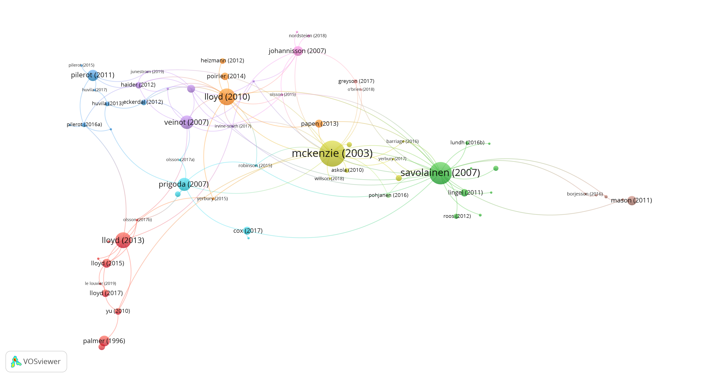

My first year as a PhD candidate in Library and Information Science at the University of Borås, Sweden, is slowly coming to an end. In order to provide an understanding of prominent research articles from researchers in the LIS subfield of information practices, I have for the past year made extensive use of the Web of Science database in order to get a contemporary grasp of the field. In this post, I will try to provide some insights into the procedures of me orientating myself in my field of research.
An initial query was inspired by the one used as a basis for bibliographic visualisations in an article by Pilerot, Hammarfelt and Moring (2017), although amended as the querying processed. The journals sought in were
The selection was made as these journals, from the earlier mentioned journal article were “deemed as major channels for practice oriented studies” (Pilerot, Hammarfelt & Moring, 2017).
Several queries were conducted, the first being1:
(TS=("practice" OR "practices" OR "information practice")) AND
(SO=("journal of documentation") OR
SO=("the association for information science and technology") OR
SO=("information research an international electronic journal") OR
SO=("library trends") OR SO=("library quarterly"))`.This query lead to the entry list including practice-oriented research within fields such as knowledge management, discourse analyses of the cognitive turn within LIS and digital library evaluation. While interesting as such, many of the terms were deemed irrelevant for the narrower scope of information practice-related research. Another query directed to the field of information practices and information behavior was the following one2:
(TS=("information practice*" OR "information behavior"
OR "information behaviour")) AND
(SO=("journal of documentation") OR
SO=("the association for information science and technology")
OR SO=("information research an international electronic journal") OR
SO=("library trends") OR SO=("library quarterly"))`.The entries in the list from this query was however disregarded as information behavior – although a prominent research field within LIS studies – often takes a more cognitivist notion on human information handling than the practice-oriented field of information practices. A third query was hence made3:
(ALL=("information practice*")) AND
(SO=("journal of documentation") OR
SO=("the association for information science and technology") OR
SO=("information research an international electronic journal") OR
SO=("library trends") OR SO=("library quarterly"))`.While this query only presents one search term, it was deemed suitable since information practices is an established term for the body of work relating to this field in particular. The results was used as a basis for the tabulation and visualisation of highly cited journal articles related to information practices. The table below presents the most widely cited authors of journal articles from this query. While citations isn’t necessarily - or solely – an indicator of scientific impact, they provide an indication of prominent journal articles related to information practices within LIS. In order to stay up to date with this query through probing, a weekly alert has been instigated from Web of Science to my university e-mail account.
| Author(s) | Article title | Journal | Citations |
|---|---|---|---|
| McKenzie, PJ | A model of information practices in accounts of everyday-life information seeking | Journal of Documentation | 175 |
| Savolainen, R | Information behavior and information practice: Reviewing the “umbrella concepts” of information-seeking studies | Library Quarterly | 128 |
| Lloyd, A | Framing information literacy as information practice: site ontology and practice theory | Journal of Documentation | 72 |
| Lloyd, A; Kennan, MA; Thompson, KM; Qayyum, A | Connecting with new information landscapes: information literacy practices of refugees | Journal of Documentation | 65 |
| Sundin, O; Francke, H | In search of credibility: pupils’ information practices in learning environments | Information Research | 45 |
| Prigoda, E; McKenzie, PJ | Purls of wisdom - A collectivist study of human information behaviour in a public library knitting group | Journal of Documentation | 45 |
| Pilerot, O; Limberg, L | Information sharing as a means to reach collective understanding A study of design scholars’ information practices | Journal of Documentation | 33 |
| Palmer, CL | Information work at the boundaries of science: Linking library services to research practices | Library Trends | 31 |
| Johannisson, J; Sundin, O | Putting discourse to work: Information practices and the professional project of nurses | Library Quarterly | 26 |
| Veinot, TC | We have a lot of information to share with each other. Understanding the value of peer-based health information exchange | Information Research | 23 |
Table 1: 10 most cited journal articles from information practice query indexed in Web of Science, 2009-2019.

Figure 1: Citation network for information practice query on articles indexed in Web of Science, 2009-2019.
The entry list was also exported as tab-delimited plain text and visualised through bibliometric network application VOSviewer (see figure above).4 This was done in order to provide a visual understanding of how authors of contemporary prominent journal articles related to information practices are connected citation-wise. The result can be seen in the figure below, where nodes representing articles by Pamela J. McKenzie (2003), Reijo Savolainen (2007), Annemaree Lloyd (2007) and Lloyd, Mary Anne Keenan, Kim M. Thompson and Asim Qayyum (2013) are prominent citation-wise, much in line with the table above.
This visualisation provides chaining-wise guidelines on which researchers’ work to follow and how they relate to each other. However, as Björn Hellqvist (2010) discusses, references in the humanities (and to some extent also in the social sciences) may very well serve other purposes than simply endorsements. References can also take the form of negative and contractive purposes in terms of positioning and contexts. While this is important to consider especially in terms of representations of these kinds, network visualisations may provide an outline of how researchers in a certain field cite each other at given times.
Hellqvist, B. (2010). Referencing in the humanities and its implications for citation analysis. Journal of the American Society for Information Science and Technology, 61(2), 310–318. https://doi.org/10.1002/asi.21256
Lloyd, A. (2007). Learning to Put Out the Red Stuff: Becoming Information Literate through Discursive Practice. The Library Quarterly, 77(2), 181–198. https://doi.org/10.1086/517844
Lloyd, A., Keenan, M. A., Thompson, K. M., & Qayyum, A. (2013). Connecting with new information landscapes: Information literacy practices of refugees. Journal of Documentation, 69(1), 121–144.
McKenzie, P. J. (2003). A model of information practices in accounts of everyday-life information seeking. Journal of Documentation, 59(1), 19–40. https://doi.org/10.1108/00220410310457993
Pilerot, O., Hammarfelt, B., & Moring, C. (2017). The many faces of practice theory in library and information studies. Information Research, 22(1). Retrieved from http://www.informationr.net/ir/22-1/colis/colis1602.html
Savolainen, R. (2007). Information Behavior and Information Practice: Reviewing the “Umbrella Concepts” of Information-Seeking Studies. The Library Quarterly, 77(2), 109–132. https://doi.org/10.1086/517840
Refined by: DOCUMENT TYPES: ( ARTICLE ). Timespan: All years. Indexes: SCI-EXPANDED, SSCI, A&HCI, CPCI-S, CPCI-SSH, ESCI. >> 715 entries in Web of Science. Retrieved 29th of October, 2019.↩︎
Refined by: DOCUMENT TYPES: ( ARTICLE ) Timespan: All years. Indexes: SCI-EXPANDED, SSCI, A&HCI, CPCI-S, CPCI-SSH, ESCI. >> 388 entries in Web of Science. Retrieved 29th of October, 2019.↩︎
Refined by: DOCUMENT TYPES: ( ARTICLE ). Timespan: All years. Indexes: SCI-EXPANDED, SSCI, A&HCI, CPCI-S, CPCI-SSH, ESCI. >> 105 entries in Web of Science. Retrieved 29th of October, 2019.↩︎
Settings used: Create a map based on bibliographic data >> savedrecs.txt >> Type of analysis: Citation >> Unit of analysis: Documents >> Minimum number of citations: 0.↩︎